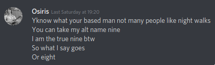
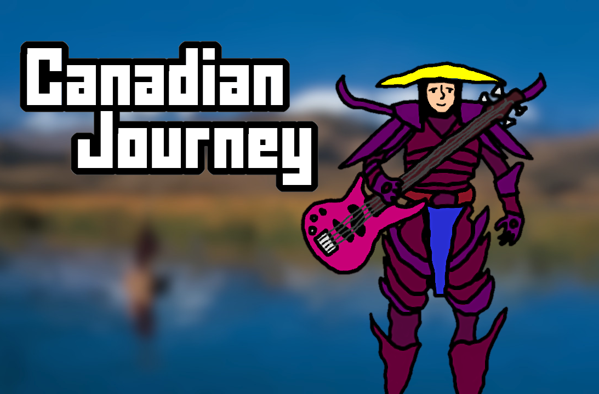
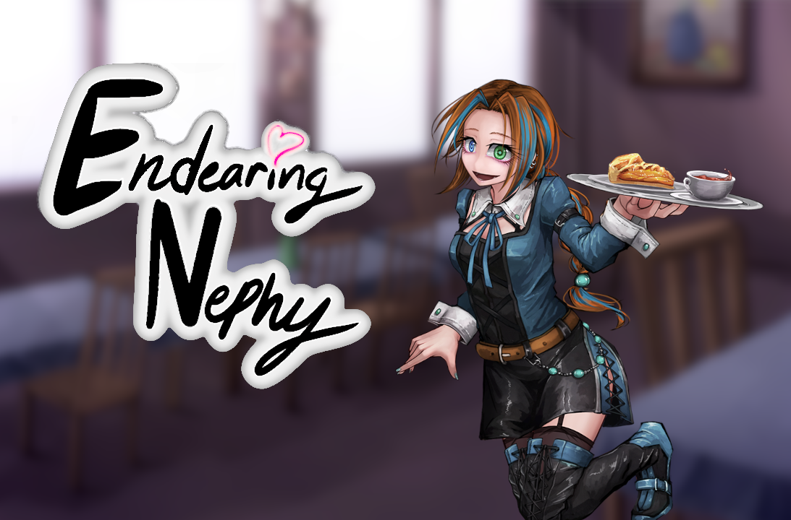

While facing depression over his first breakup, the yet-to-be-named Seven spent a lot of time on /r9k/. It was here in around June, 2018th year of our Lord, that he found a link to a Discord server. It was made by legendary 4channer Alai. He quickly bonded and became friends with the server's inhabitants. For the sake of shortness, the most notable were Alai, Yungpupper, Nikola, Oongi Sploongi, and Phil. We will get to them later. In this server there was lots of e-dating, simping, and brotherly bonding. Seven and Yungpupper grew close together with exercising and talking about walking/other exercises. There were various cases of serial edating and simping. One day, a twenty two year old Polish woman named Nikola posted "Looking for bf". Seven, being the first to respond, accepted the offer, although the offer was a joke. This started the awkward friendship between the at the time underage Seven and the possibly pedophilic mum "gf". Once the owner of the server, Alai, found out his e-girlfriend was actually an e-boyfriend, he broke down and deleted the server.
Seven, missing his /r9kcord/ buddies he made and the, albeit shitty and toxic; community, made his own server. The server was renamed many times but most notably called Fishstudy. The people of Alai’s server invited their friends, making the server all the more better. A lot of peple here had their niche. For example, Phil posted about Charles Manson's album "Sick City" and other old school metal artists, and Yungpupper would continue to talk about self improvement and getting fit. Phil would also use this server as a ground for simping for Nikola, who he was one year apart from in age. Yungpupper invited the legendary Yun, whose every word was pure wisdom. Most if not all of these sayings are preserved in the Book of Yun. There was a falling out between Phil and Nikola and Seven and Phil. Nikola thought Phil was too old as he was not a little boy like Seven. Seven was blocked by Phil because of making loli jokes, which Seven denies. This server eventually grew inactive, and Seven moved to Nikola's server skribblio where a lot of her friends were. As this server doesn't have much to do with /r9kcord/, we'll skim over it.
Transfer from Solid Seven to Liquid Seven

Games

(Download here)

(Download here)